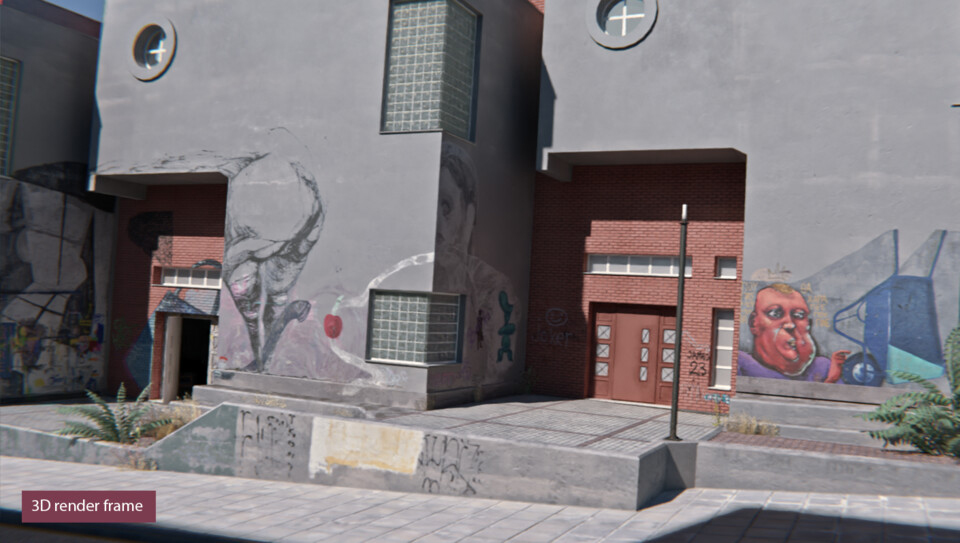
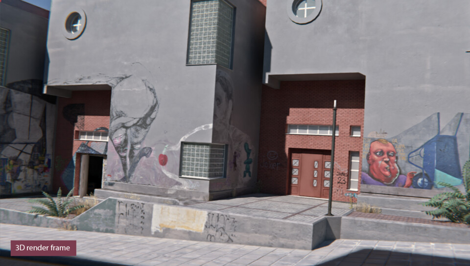

Η πτυχιακή μου εργασία στο τμήμα Εικαστικών και Εφαρμοσφένων Τεχνών ήταν ένα 3D βιντεοπαιχνίδι δύο παικτών. Το βιντεοπαιχνίδι εξελίσσεται σε έναν εικονικό κόσμο που μιμείται τον χώρο του τρίτου εργαστηρίου ζωγραφικής και η περιήγηση γίνεται μέσα από τα μάτια του εκάστοτε παίκτη. Εκεί υπάρχει η δυνατότητα να ζωγραφίζει, να κάνει κατασκευές, να συνθέτει κείμενα και να κάνει διάλειμμα, όπου μπορεί να επικοινωνήσει με τον άλλο παίκτη μέσω μικροφώνου. Οι λειτουργίες εναλλάσσονται βάσει ενός εσωτερικού χρονομέτρου.
A brief technical breakdown of the project.
H εργασία, με τη μορφή διαδραστικής εγκατάστασης, επειχειρεί να εγείρει προβληματισμούς σχετικά με τους εξωτερικούς αλλά και εσωτερικευμένους παράγοντες που επηρεάζουν και ορίζουν την δημιουργική διαδικασία. Έχωοντας υπάρξει φοιτητής σε μία σχολή καλών τεχνών και στο συγκεκριμένο εργαστήριο αποφάσισα να αναδείξω κάποιες από τις όψεις του βιώματος της φοίτησης στον χώρο, όπως τις έχω αντιληφθεί μέσα από ένα κολάζ συζητήσεων και ιστοριών απο συμφοιτητές και αποφοίτους, σε συνδυασμό με την προσωπική μου εμπειρία.
Λογισμικά που χρησιμοποιήθηκαν: Unity & Photon, Visual studio, Blender 3D, Substance Painter, Adobe Photoshop, Davinci Resolve, Adobe InDesign.

Οι κατάλογοι της έκθεσης.
 



Μερικές συγκρίσεις μεταξύ φωτογραφιών και render.


Φωτογραφίες από την εγκατάσταση.